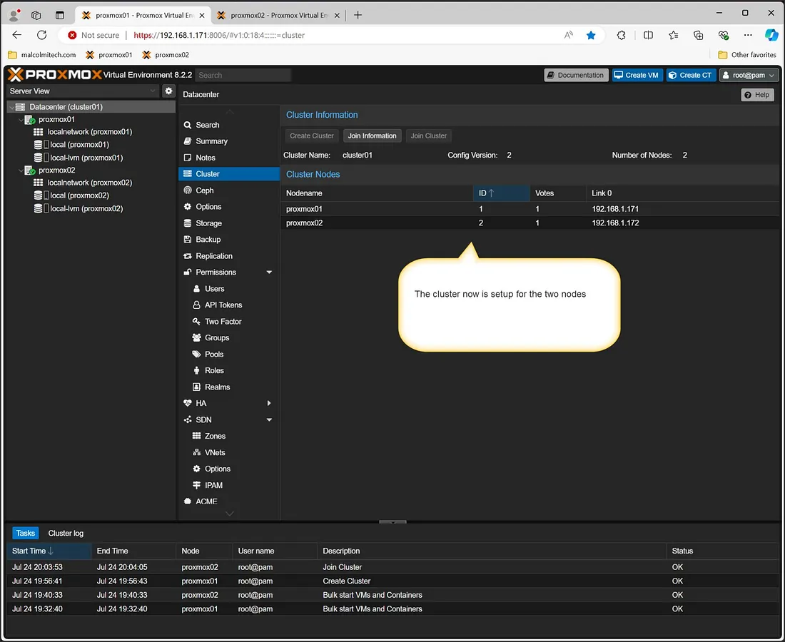

🖧 Join Two Proxmox Servers into a Cluster
Proxmox VE makes it easy to manage multiple servers by clustering them together. This guide walks you through setting up a two-node cluster manually with screenshots.
📋 Prerequisites
- Two or more Proxmox VE servers with static IP addresses
- Root privileges on both servers
🛠️ Step 1: Create the Cluster on Server 1
- Log into Server 1.
- Navigate to Datacenter → Cluster.
- Click Create Cluster, enter a cluster name, then click Create.
📨 Step 2: Copy Join Information
- Still on Server 1, open the Join Information tab.
- Copy the displayed details including fingerprint and token.
🔌 Step 3: Join Server 2 to the Cluster
- On Server 2, go to Datacenter → Cluster → Join Cluster.
- Paste the join information and click Join.
🔗 Optional: Join via CLI
If you prefer using the command line, you can run this on Server 2:
pvecm add <Server1-IP>✅ Cluster Ready
Once complete, both servers should appear in the cluster view and can participate in HA tasks, shared storage, and fencing actions.
